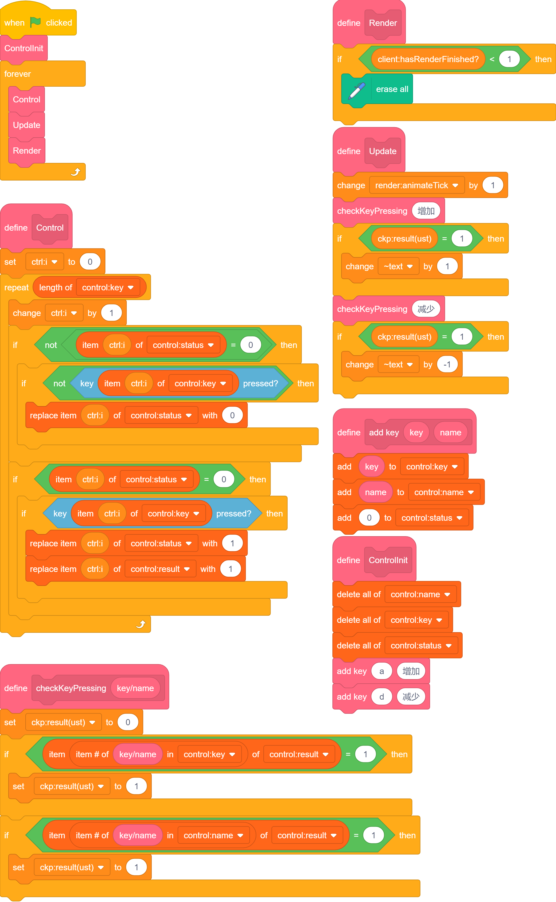
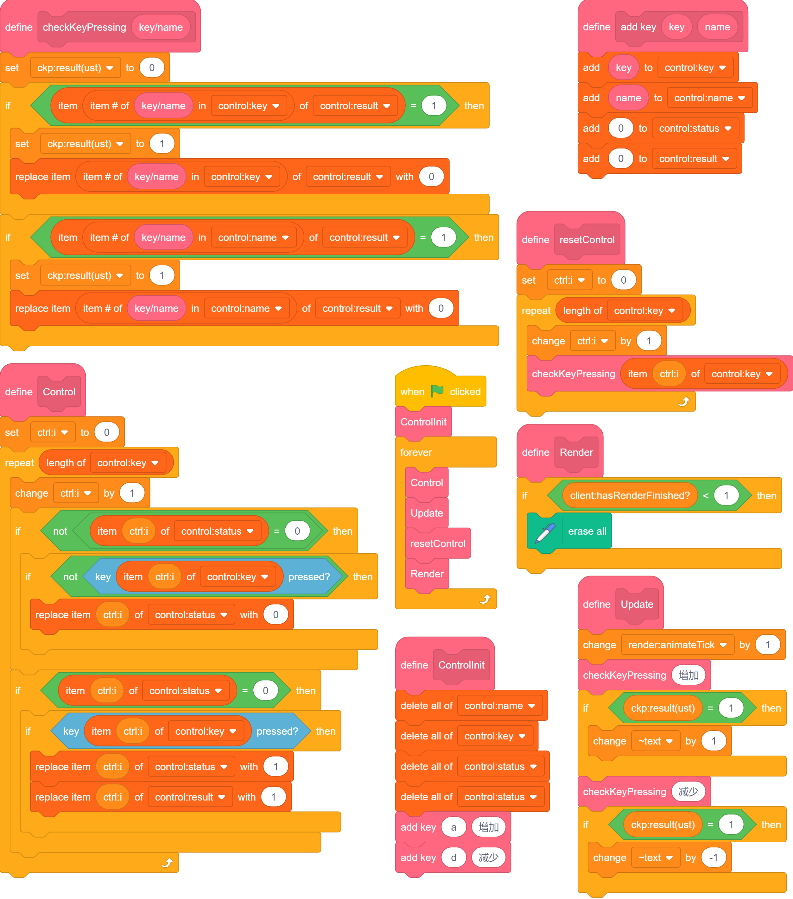
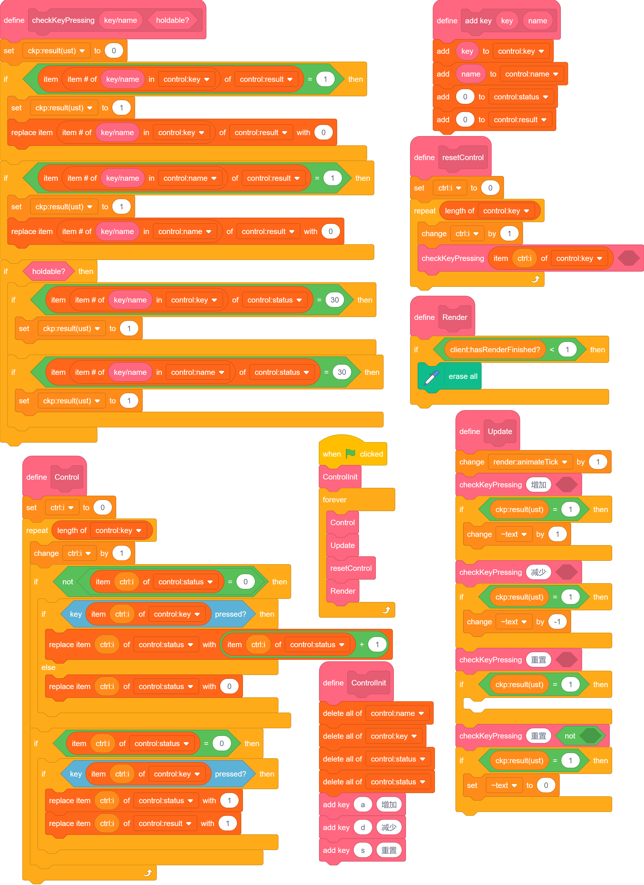
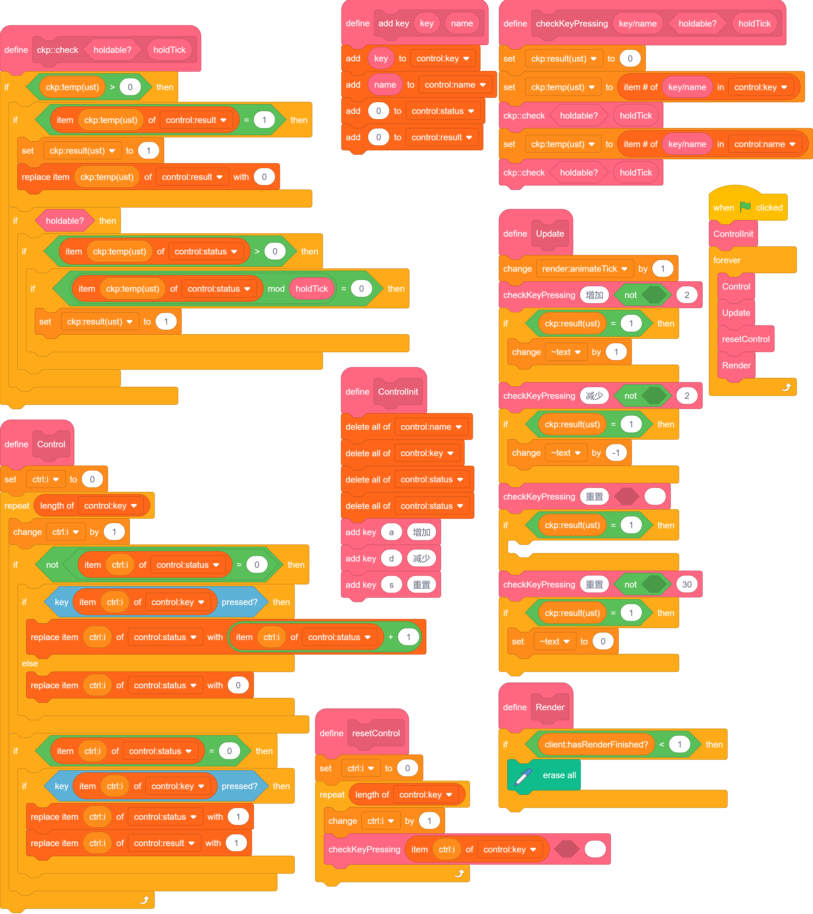
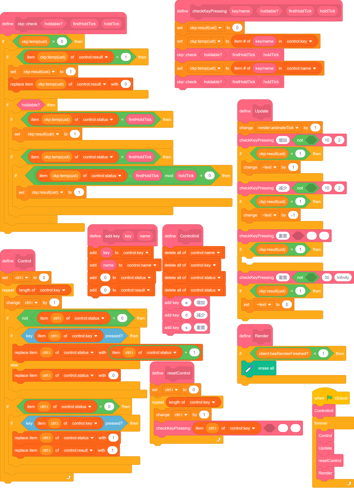
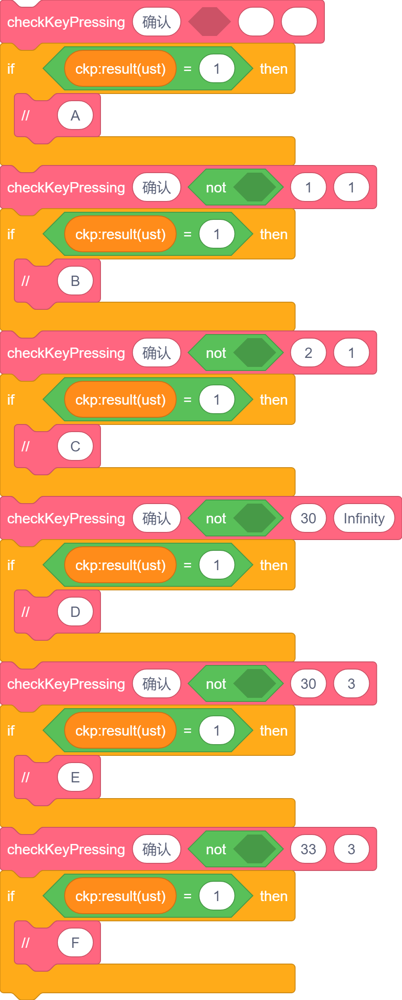
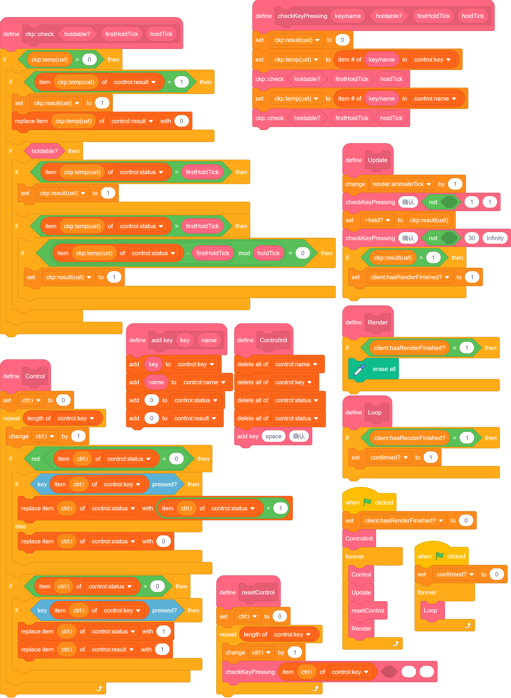
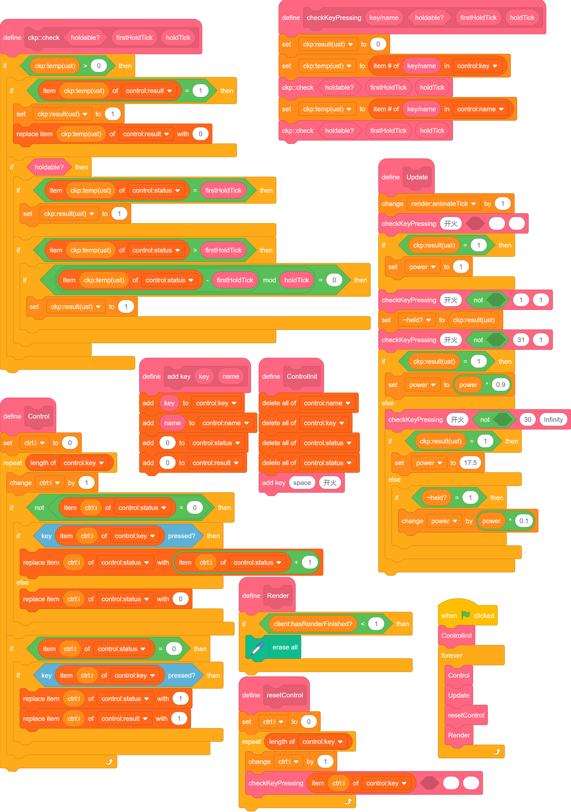

Input Gathering
sc本身的输入功能非常鸡肋，只能检测是否按下某个键。
至少做到鼠标侦测（当角色被点击）那样吧。
需要说明的是，我们主要以URM作为底层。
键盘侦测
为了便捷地动态增减要侦测的按键，我们要用列表把它们存起来。
我们可以简单设想一下我们要实现的：检测点击、抬起和长按。
包装按键
让我们先把对于每种按键都要进行一遍的 如果<()按下>...否则... 化简一下。
我讲下想法，免得这步有些跳跃。
首先，用列表存储要侦测的按键种类，并将按键命名，以方便游戏中自定义按键。
然后，在每次更新时调用按键侦测。
侦测后，ckp:result(ust)==1 就等价于 <()按下> 了。
具体如下：
 点此测试
点此测试
由于数显的存在与否无关紧要，我们目前的渲染直接使用原生sc的变量。
点击和取消点击
分析
注意到上述仅仅一个 status 作为结果来处理略显不足，因我们不能让上层部分覆盖下层部分的读入。
所以我们要新增一个列表 result。
此时，我们可以用 status 表示按键是否按下，而 result 可以表示是否在这一刻进行了变化以及变成了什么。
然后，我们将 status 根据 0/1 分开。
为什么？
只有在 0 时，检测到按下，是点击；在 1 时，检测到按下，是持续按下，不属于点击。
于是我们成功把 按下 转化为了 点击/持续按下 两种情况。
另外，侦测的时候，要改为对 result 判断。
全都改完之后是这样：

问题
此时如果你点击测试，会发现..
根本停不下来啊！！
对，我们忘记了清除 result。
所以我们要在侦测的地方把 result 重新赋值为 0。
另外，每一帧都要重置 result，避免“暂时没有侦测的时候，result 一直保留着，侦测的时候不小心侦测到了亿万年以前的点击”这样的情况发生。
所以我新建了一个函数 resetControl。修改完如下：(为了让代码块看起来更大，稍微重新排布了一下)

点此测试
长按
一次长按
分析
我们简单想一下就知道，长按跟点击要分开。
不过，我们刚才实现了一部分长按，就是 status 为 1 时对应的状态。
但是如果只是这样，长按跟最开始的情况没有区别吗？
我认为做到“根据点击时长决定效果”会比较酷。
我们刚才写的 not<status==0>，也提示了这一点：我们可以让 status 大于 1，表示长按的时长。
那我们先让每 30帧 （ 正常情况下 约 1秒）记为标准的长按，来尝试触发一下。
那我们的更改部分还包括 checkKeyPressing，我们需要加一个参数来声明是长按还是点击。
实例
具体地，我们先实现一个重置键，可以在长按一秒后将中间的数值归零。
此时要讲一个特殊的操作：（详细见代码）
我们要单独对单点进行处理。
在后面访问长按时，由于 result==0 一定成立，不会由于单点而触发相关操作。
（一定先单点，再长按，这部分后面会有更多的讲解）

点此测试
多次长按
好了，实现了固定时长的长按，我们能否实现更多内容？比如指定长按时间？
我们需要为 checkKeyPressing 增加参数，控制长按时长。
简单观察发现，其余部分不需要进行更改。
不过，我们把 checkKeyPressing 的内容进行了一些修改，节省一些模块，并增加可读性。
同时，这里我们改用了取模而非取等，可以让长按多次被检测到。(如果你不希望这样，先别急，下一步可以解决这个问题)

多样的长按
当然，这里可以做一些奇妙操作，让操作更为顺滑。
简单来说，我们可以单独设定第一次长按所需的时间。

点此测试
小结
这样，我们就实现了以下几类操作：
1. 单点，只填第一个参数即可。
2. 条件长按，具体分类见下，与 1 的差别是所有参数都要填，但是判断是否可长按存在条件，如 player.runable?==1(玩家可奔跑?==1) 等。
3. 长按后仅触发一次，最后一个参数填 Infinity。
4. 长按，且长按第一次触发前需要一定延迟，此时倒数第二个要填较大值，最后一个要填较小值。
5. 长按，且长按第一次触发前不需延迟，此时倒数两个数均填较小值即可。
独一无二的单击
案例
正如前面所说，我们单独处理了单击，就不用在后面考虑单击的影响了。但长按之间并不存在阻断关系。
我们分析一下这组代码的作用：

分 A,B,C,D,E,F 六个模块讲解。
作用
| 模块 | 等效作用 | 用途 |
|---|---|---|
| A | 单击时 | 检测单击 |
| B | 单击及以后按下时 | 不检测单击但检测按下时 |
| C | 单击以后按下时 | 检测单击且检测之后的按下时 |
| D | 按下一秒时 | 仅一次，根据固定时长触发效果 |
| E | 按下一秒及以后 | 较为真实的输入 |
| F | 按下一秒以后 | 单独处理 D 时，处理后序的按下引发的效果 |
更精确的秒数调控，需要 Update 与 非 loop 的 Manipulate 配合。
完毕。
实例
- 长按关闭页面功能

点此测试
- 蓄力武器处理

点此测试
完毕。
控制时间
通过与 跳帧 结合，我们可以同时适配 30帧 与 60帧。
鼠标侦测
仿照键盘部分即可，但是判定方式略有改变。
目前先将键盘部分内容拷贝过来并进行了少量修改。如图。